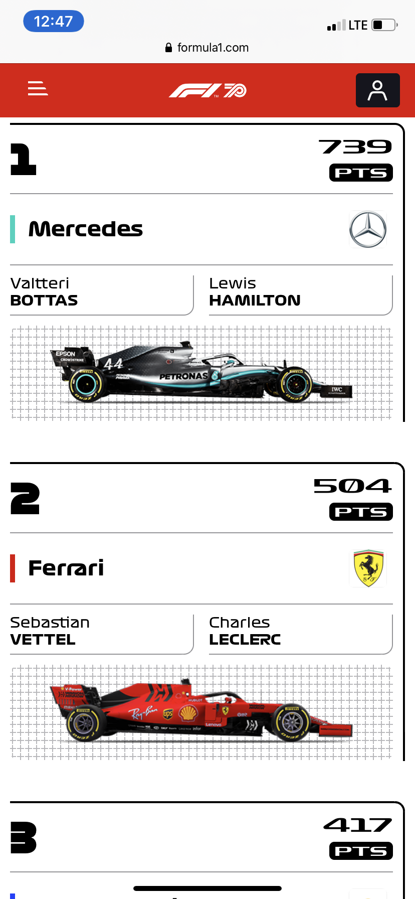
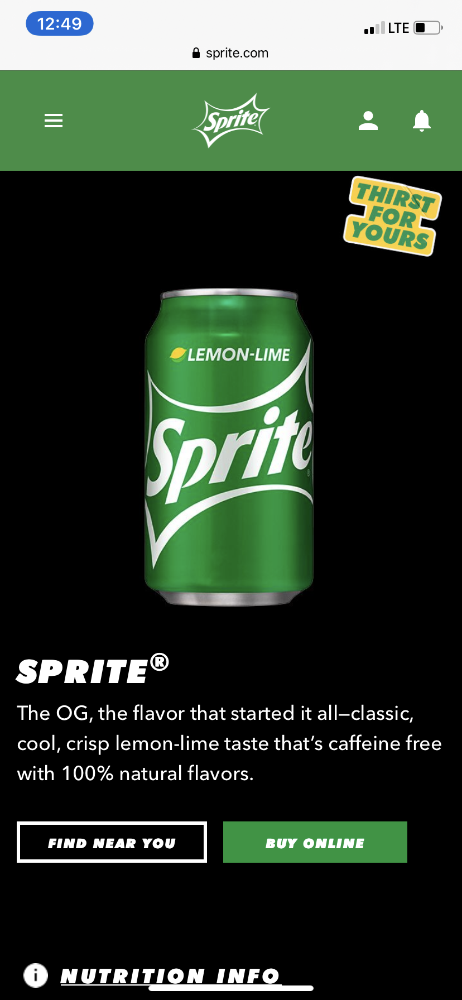

Repetition
A good example of using repetition in design, is the Formula1 website. We can appreciate a consistant use of this particular pattern. It creates a noticiable look to the typefaces and adds value to the formula 1 cars photographies.
formula1.com
Contrast
When visitors look to this website, they can appreciate the colors and the size of the elements with great contrats, creating a good visual effect by highlighting the product.
sprite.com
Alignment
As simple as it looks, this website serves as a great example of a visual alignment.The composition of the elements are properly arranged so they look line up and in a well organized way.